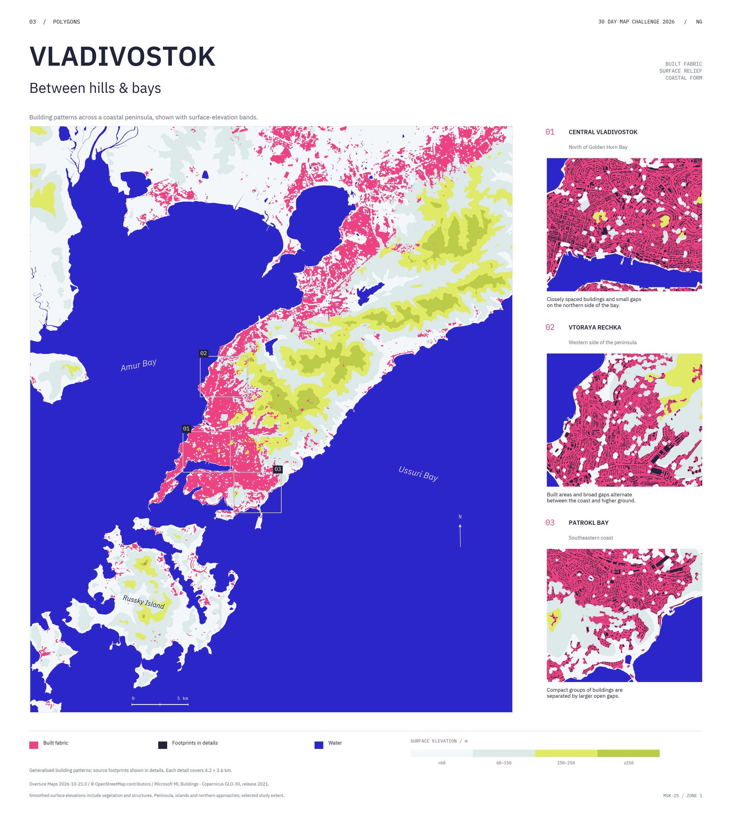

03 Polygons
Vladivostok.
Between hills & bays
Building patterns across a coastal peninsula.

Behind the map
Data, method & credits
Created with Python and AI-assisted scripting. Building footprints are generalised into polygons and compared visually with coastline and elevation. MSK-25 zone 1, geographic north arrow. Flat elevation bands, without hillshade.
Sources and licence
- Buildings: Overture Maps Foundation, release 2026-10-21.0. Local source records identify © OpenStreetMap contributors and Microsoft ML Buildings, ODbL. The prepared study selection contains 112,323 footprints; completeness is not established.
- Coast and inland water: © OpenStreetMap contributors, snapshot 25 October 2026, ODbL.
- Elevation: Copernicus GLO-30 Public, release 2021, approximately 30 m source resolution, smoothed for display. A surface model includes vegetation and buildings. Source release is not the acquisition date of every cell. Underlying DEM retains the licence linked from the source record.
- Generalisation: 10 m grid, closing radius 40 m; patches below 1,800 m² and holes below 1,200 m² removed, outlines simplified by 18 m. Derived fabric polygons / GeoJSON, ODbL. This is a display rule, not a legal or functional boundary.
Cartographic design: NG Cartography, CC BY-NC-SA 4.0. Underlying sources retain their licences; derived geometry is offered under ODbL. Embedded IBM Plex fonts retain their SIL Open Font License.